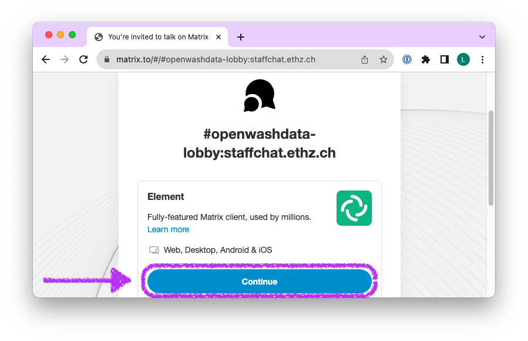
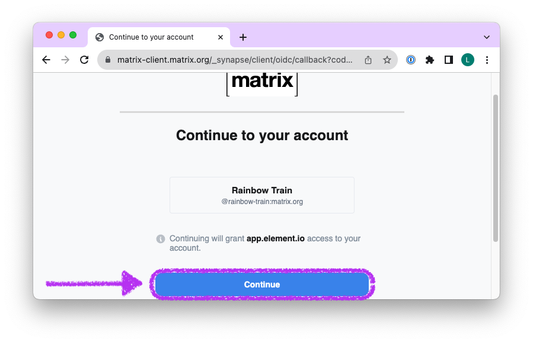
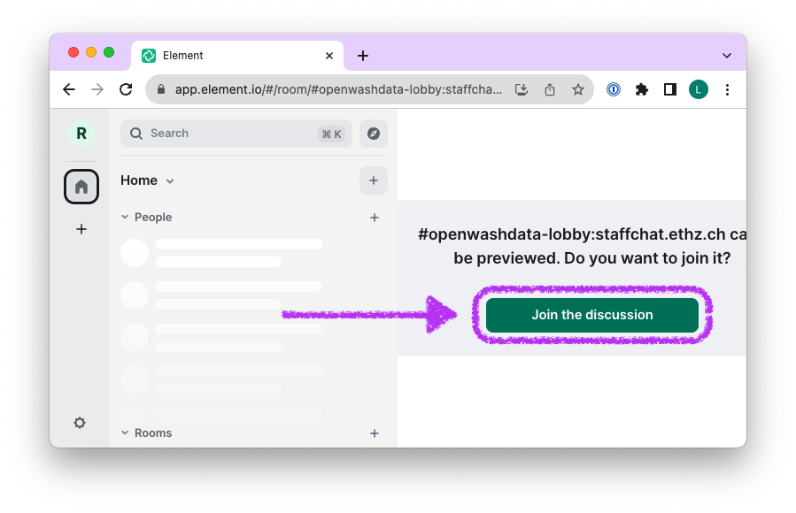
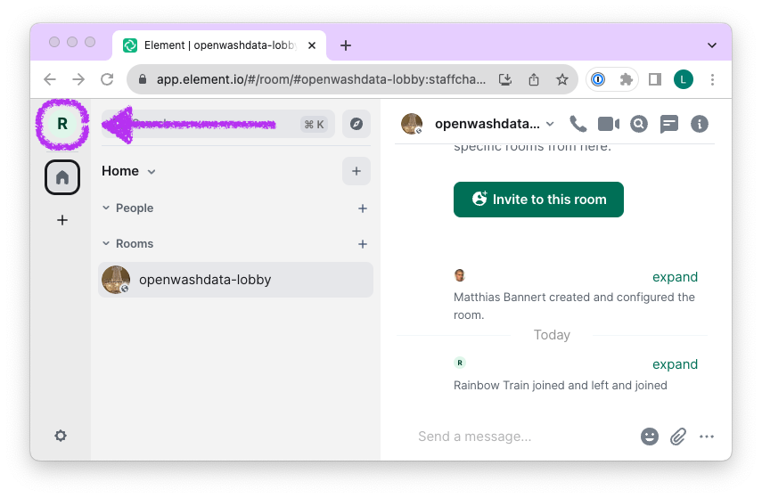
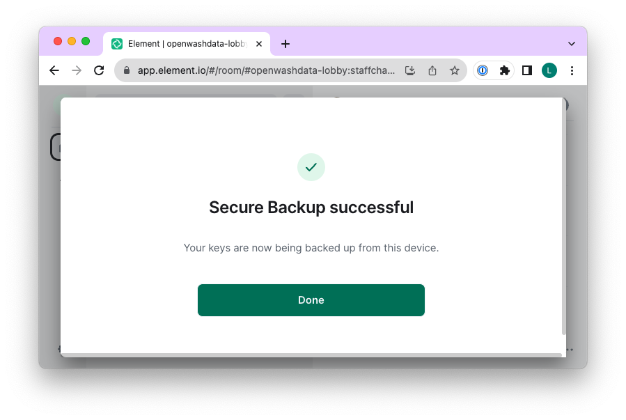
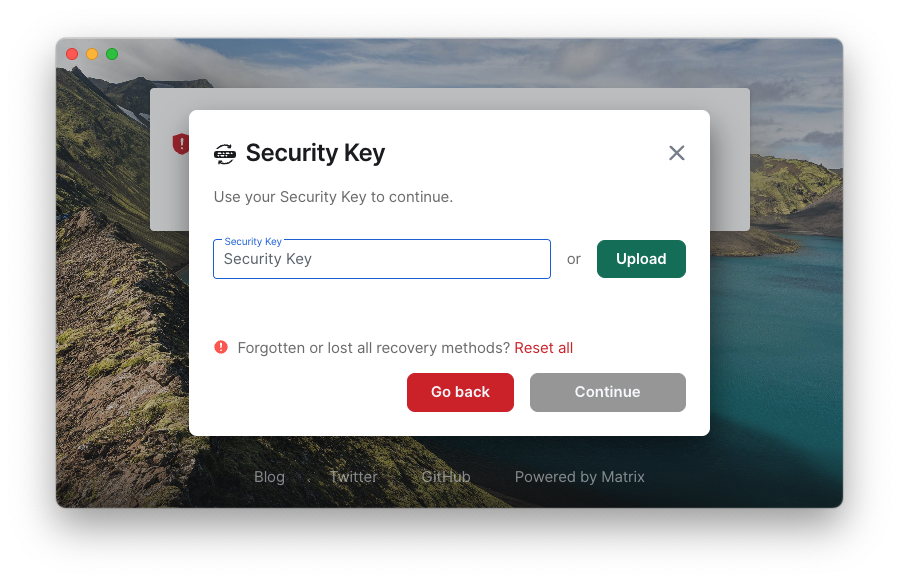

Communication in a chat
Emails are not a very quick, responsive way of communication. We avoid them by prioritising other channels.
We want to communicate through a chat client called Element, providing the open source, free-of-charge Slack-like experience.
On Element, you can reach out to the course instructors and other students any time, and we have a way to stay in touch beyond the course itself.
If we can support you to setup the chat, get in touch with us via Email and we will schedule a call for a walk through.
To set it up, please follow the steps below:
Step 1: Join the chat
Open the following link in your browser: https://matrix.to/#/#openwashdata-lobby:staffchat.ethz.ch
Click on Continue

- Click on Sign Up

- Click on the GitHub icon

- Click on Continue

- Click on the X to close the dialogue

- Click on “I’ll verify later” to close the dialogue
 8. Click on “Join the Discussion”
8. Click on “Join the Discussion”
 9. Leave a message
You are now in the lobby of the openwashdata community. Leave a message to introduce yourself. You will be added to the room ds4owd-001 that is specifically for this course.

Step 2: Verify element session
- Click on the icon in the top left corner

- Click on All settings

- Select Sessions in the navigation pane on the left, click Verify session
 4. Click Proceed with reset
4. Click Proceed with reset
 5. Select Generate a Security Key and click Continue
5. Select Generate a Security Key and click Continue
 6. Click Download and save downloaded security-key.txt securely
6. Click Download and save downloaded security-key.txt securely
 7. Click Continue
7. Click Continue

- You have succesfully verified your session
You can download Element as an app for your computer and also your phone. If you proceed to do this, then use the stored security key to verify those additional sessions.

Step 3: Download Element (optional)
- Download and install Element: https://element.io/download
It’s available on Windows, Linux and Mac OS, as well as Android and iPhone.
Open the Element App on your device
Click on Sign In
Sign in with GitHub
Click on Verify with Security Key
 6. Copy/paste the Security key from the downloaded
6. Copy/paste the Security key from the downloaded security-key.txt you received when setting up the app in your browser. And hit Continue.
If a click on Continue does now work with your mouse, then hit the Return (Enter) key on your keyboard.
 7. You have successfully verified your device